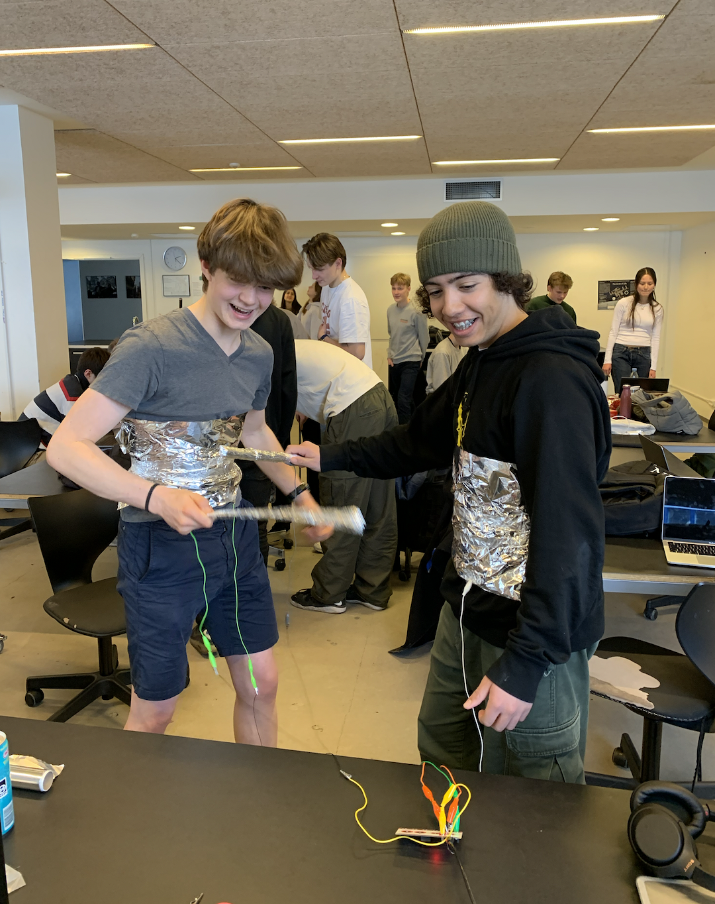
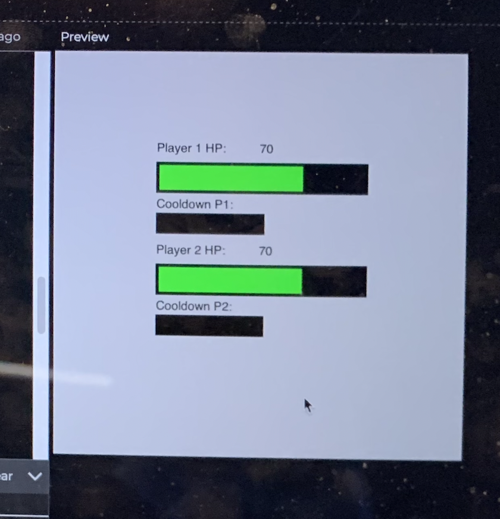
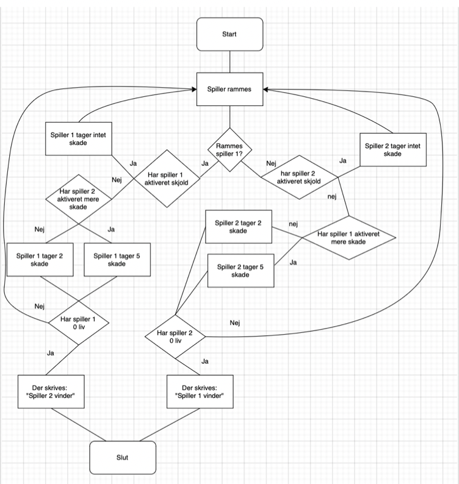

Spil Og Leg
Jeg har arbejdet sammen med Malte, Oskar og Rasmus
Intro til projektet
I "spil, leg og samarbejde" forløbet har vi arbejdet på at skabe et computerspil fra bunden, som dog ikke må kunne styres med kun en computer. Derfor har vi også arbejdet med en "Makey Makey": et praktisk interface der kommunikerer med computeren på samme måde som et keyboard, men hvor den ved hjælp af svage elektriske kredsløb kan skabe inputs fra stort set hvad som helst. Derudover har vi programmeret selve spillet i sproget python.
Vores Spil
Vi har trukket inspiration fra genren "fighting games", som for eksempel det populære "Street Fighter". Vi tænkte, at vi ville tage en meget forsimplet version af denne type spil, og forsøge at bringe det ud i 3D-verdenen. Det fungerer således: der er 2 spillere ad gangen. Hver spiller har et "sværd", som man kan bruge til at slå den anden. Hver gang et slag rammer, mister modstanderen to HP (health points). Derudover kan man også bruge et "special attack" som gør 5 skade på modstanderen. Efter hvert "special attack" er der en cooldown periode på et antal sekunder før spilleren kan bruge det igen. Når ens modstander ikke har flere HP tilbage, er spillet ovre
Fejlkilder
Efter vores play-test af spillet, fandt vi en del problemer ved den praktiske udførsel af spillet. Først og fremmest, er opstilling besværlig og tidskrævende. Det tager lang tid at tilslutte alt til makeymakey'en og det er svært at lave "rustningen" eftersom at den kun dækker én del af kroppen - torsoen. Hvis den f.eks. også skulle dække armene ville det kræven flere ledninger som skulle tilsluttes til ground. Ledningerne er i forvejen et problem, da fylder meget og derfor falder nemt ned fra sværdene og rustningerne, og dermed stopper spillet. Sværdet består stortset kun af sølvpapir, hvilket betyder at det nemt knækker og gør det svært at spille. Derudover skal det bemærkes at "special attacks" endnu ikke fungerer i praksis, hvilket fjerner en stor del af spillet.
Billede af Malte og Osakr der spiller spillet og spilscore


Flowchart

Fejlkilder
Efter vores play-test af spillet, fandt vi en del problemer ved den praktiske udførsel af spillet. Først og fremmest, er opstilling besværlig og tidskrævende. Det tager lang tid at tilslutte alt til makeymakey'en og det er svært at lave "rustningen" eftersom at den kun dækker én del af kroppen - torsoen. Hvis den f.eks. også skulle dække armene ville det kræven flere ledninger som skulle tilsluttes til ground. Ledningerne er i forvejen et problem, da fylder meget og derfor falder nemt ned fra sværdene og rustningerne, og dermed stopper spillet. Sværdet består stort set kun af sølvpapir, hvilket betyder at det nemt knækker og gør det svært at spille. Derudover skal det bemærkes at "special attacks" endnu ikke fungerer i praksis, hvilket fjerner en stor del af spillet.